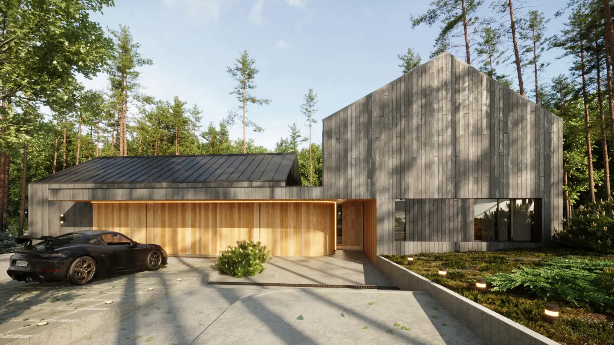
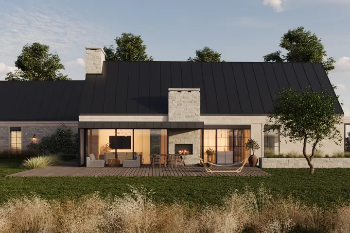
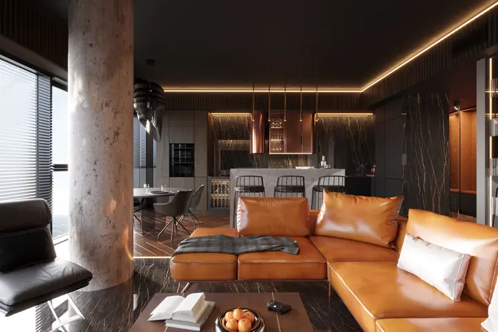
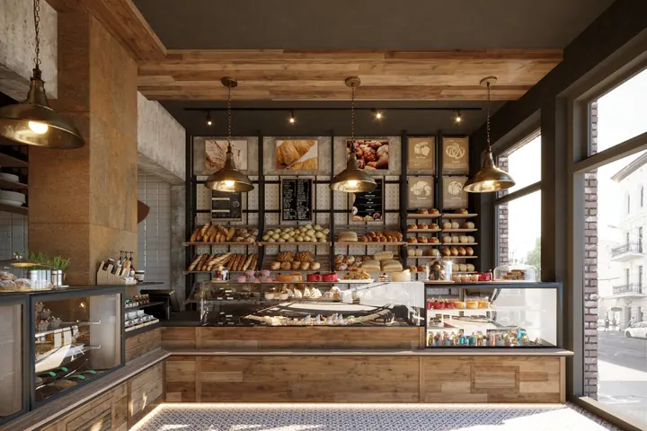
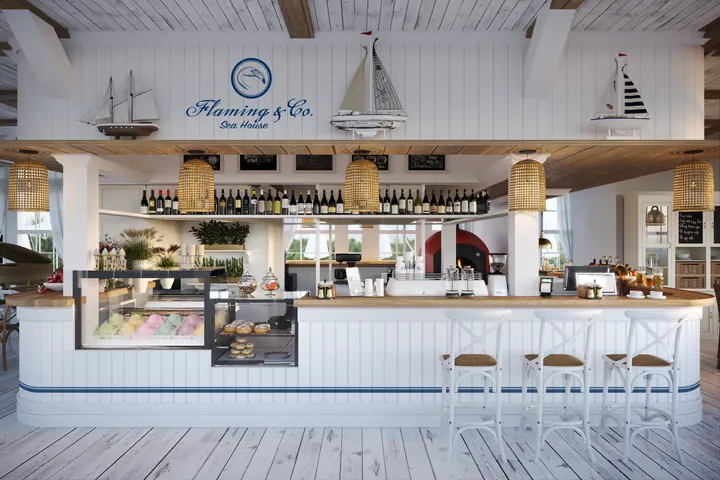
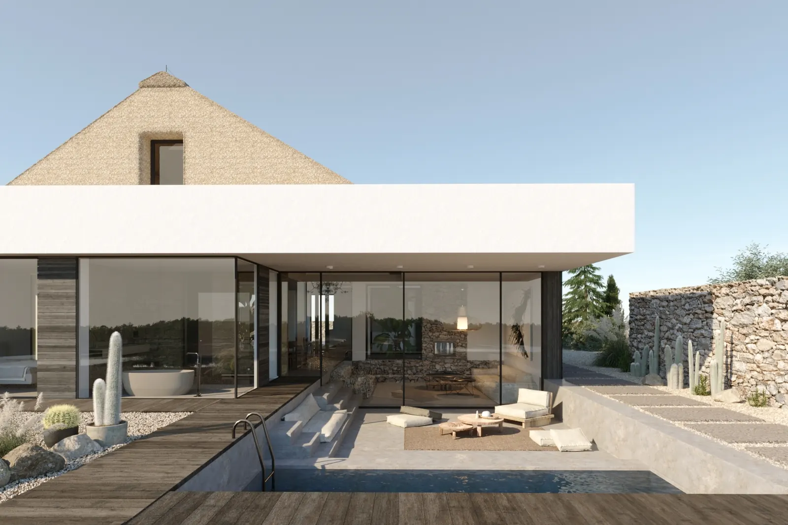

Dom w Pilchowie, projekt pracowni
Pracownia
architektoniczna w SzczecinieBudynki i wnętrza od koncepcji po realizację
Projektujemy domy, budynki wielorodzinne, wnętrza oraz lokale usługowe i hotele. Prowadzimy projekt od analizy działki, przez projekt budowlany i wykonawczy, po nadzór autorski.
w ciągu 24 godzin
Co projektujemy
Od pojedynczego pomieszczenia po zespół budynków mieszkalnych. Każdy projekt zaczynamy od wytycznych inwestora, warunków działki i kontekstu miejsca.

Domy jednorodzinne
Projekty indywidualne: koncepcja, pozwolenie na budowę, projekt wykonawczy.

Wnętrza
Układ funkcjonalny, wizualizacje, rysunki, dobór materiałów i wyposażenia.

Gastronomia i usługi
Restauracje, kawiarnie, piekarnie, biura i kancelarie.

Hotele i obiekty komercyjne
Obiekty hotelowe, apartamentowe, handlowe i użyteczności publicznej.
Budynki wielorodzinne i zespoły zabudowy mieszkalnejRozbudowy i przebudowyAnaliza działki przed zakupem
Wybrane realizacje
Domy, mieszkania i lokale, które zaprojektowaliśmy w Szczecinie, na Pomorzu i w całej Polsce. Przesuń, aby zobaczyć kolejne, kliknij, aby powiększyć.
W portfolio pracowni jest ponad 35 projektów: domy, mieszkania, restauracje, biura, hotel i konkurs na osiedle TBS w Stargardzie.
Pracownia CO Architekci
Biuro powstało w 2014 roku w Szczecinie. Projektujemy architekturę i architekturę wnętrz: obiekty mieszkalne jednorodzinne i wielorodzinne, hotelowe, komercyjne i użyteczności publicznej.
Niezależnie od skali angażujemy się w każdy etap, od koncepcji po realizację, i stawiamy na otwartą komunikację z inwestorem. Projekt może przebiegać w całości online, bez ani jednego spotkania stacjonarnego.
Dobrze zaprojektowana architektura nie potrzebuje nadmiaru dekoracji - jej siła tkwi w przemyślanej strukturze, świetle, materiale i relacji z otoczeniem.
Piotr Lipski
mgr inż. arch., właściciel pracowni
Katarzyna Sawicz-Jabłońska
mgr inż. arch., architekt, upr. nr 13/ZPOIA/OKK/2022

Projekt widać, zanim powstanie
- interaktywne modele projektowanych obiektów
- fotorealistyczne wizualizacje i animacje komputerowe
- makiety drukowane na drukarce 3D
Jak pracujemy
Najlepiej zgłosić się jak najwcześniej, nawet przed zakupem działki. Pomagamy ją ocenić i sprawdzić, co można na niej zbudować według planu miejscowego lub warunków zabudowy.
Czasy bez procedur urzędowych.
Ile kosztuje projekt?
Zależy od zakresu, metrażu i stopnia skomplikowania, rozliczenie jest etapowe. Przykładowo projekt domu o powierzchni ok. 200 m² to około 45 000 zł za koncepcję, projekt do pozwolenia na budowę i dokumentację branżową.
Analiza i brief
Wytyczne inwestora, budżet, termin, mapa do celów projektowych, plan miejscowy lub warunki zabudowy, analiza chłonności działki.
Koncepcja
Układ funkcjonalno-przestrzenny i bryła, pokazane na wizualizacjach i modelu.
Projekt budowlany
Dokumentacja do pozwolenia na budowę lub zgłoszenia, uzgodnienia i decyzje.
Projekt wykonawczy
Rysunki i zestawienia dla wykonawców, dobór materiałów.
Wsparcie w realizacji
Nadzór autorski, rekomendacja sprawdzonych wykonawców, kontrola zgodności z projektem i budżetem.
Najczęstsze pytania
Nie ma tu odpowiedzi na Państwa pytanie? Proszę napisać, odpowiadamy zazwyczaj w ciągu 24 godzin.
Co obejmuje projekt?
Koncepcję funkcjonalno-przestrzenną, projekt budowlany (do pozwolenia lub zgłoszenia), projekt wykonawczy dla wykonawców, wizualizacje 3D oraz nadzór autorski.
Czy muszę mieć działkę albo budynek?
Nie. Pomagamy przeanalizować i wybrać działkę lub ocenić nieruchomość przed zakupem.
Czy projektowanie może odbywać się online?
Tak. Proces projektowania może przebiegać w całości zdalnie, bez ani jednego spotkania stacjonarnego.
Czy w projekcie można wprowadzać poprawki?
Tak, oferta zawiera określoną liczbę poprawek i korekt. Zmiany są możliwe na każdym etapie, zakres i koszt ustalamy indywidualnie.
Czy mogę zlecić projekt jednego pomieszczenia?
Tak, realizujemy także pojedyncze wnętrza.
Jakie dokumenty są potrzebne?
Mapa do celów projektowych, badanie gruntu, wypis i wyrys z planu miejscowego lub decyzja o warunkach zabudowy, wytyczne co do programu i charakteru architektury oraz inspiracje.
Porozmawiajmy o Państwa projekcie
Wystarczy kilka informacji o inwestycji. Przygotujemy wycenę i zaproponujemy zakres prac.
71-064 Szczecin